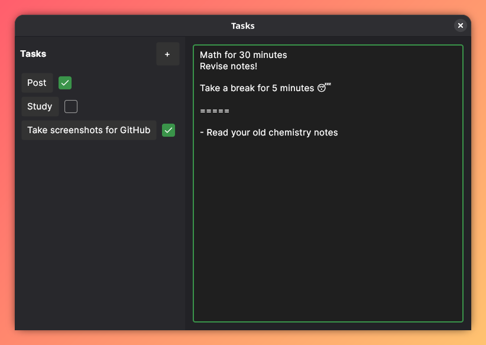
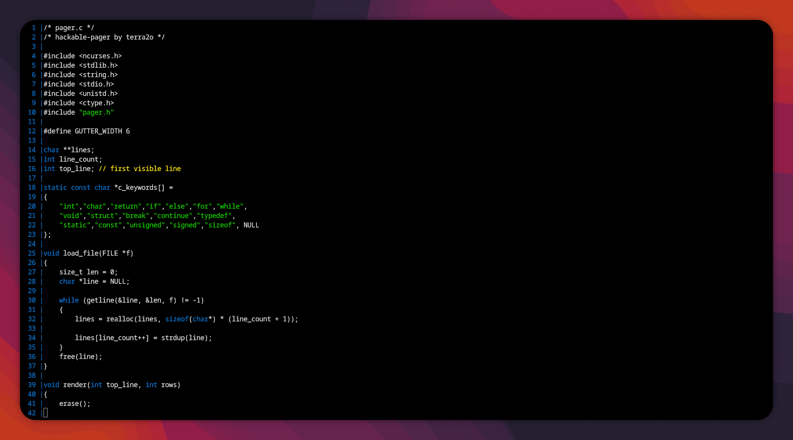

Apps
Finished Projects
Tasks
Tasks is a to-do application written in C# + Avalonia. Written to make writing tasks down simpler. Solves the issue that modern to-do apps are too complex.
GitHub repo of Taskshackable-pager
hackable-pager is a minimal pager that's flexible for other projects. Written in C + ncurses. Written so that people don't have to re-invent the wheel.
Github repo of hackable-pager